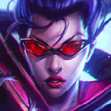

核心裝備
 殞落王者之劍
殞落王者之劍攻速、吸血與百分比傷害是對前排核心。
 鬼索的狂暴之刃
鬼索的狂暴之刃提高攻速並強化持續普攻輸出。
 智慧末刃
智慧末刃面對魔法傷害時兼顧攻速與抗性。
 多明尼克的問候
多明尼克的問候敵方護甲成形後維持物理部分輸出。
 守護天使
守護天使後期被刺客切入時提供一次復活保險。

Vayne · 百分比真傷／翻滾追擊型射手
汎在 ARAM 前期射程劣勢明顯，先穩定打前排，不要為了第三下銀箭往前多走兩步被控。敵人突進時用三技擊退，若能撞牆再追擊；開大後翻滾隱身用來重新選位置，而不是固定往前翻。
本站評級理由：汎對高生命前排有非常穩定的百分比真傷，後期開大後也有強力追擊與自保；但 ARAM 缺乏側線、前期手短且清兵能力普通，因此需要裝備與良好站位才能發揮。
標準 ARAM 採 100%／100% 基準；未將未明確標註同步標準 ARAM 的 AAA ARAM 專屬數值混入。攻略以 7.2b 現行英雄與裝備環境整理。
攻速、吸血與百分比傷害是對前排核心。
提高攻速並強化持續普攻輸出。
面對魔法傷害時兼顧攻速與抗性。
敵方護甲成形後維持物理部分輸出。
後期被刺客切入時提供一次復活保險。

攻速讓銀箭更快觸發。

三級鞋補輸出與追擊。

長時間普攻快速提高攻速，最符合銀箭節奏。

補前期傷害。

提高對低血目標的收割。

進一步提升攻速。

被刺客近身時降低第一輪爆發。

補擊退角度與逃生。

短手射手被切入時增加生存時間。
2 技 > 1 技 > 3 技
主 2 強化銀箭百分比真傷，次 1 提高翻滾輸出與機動；三技主要作保命與撞牆控制，大絕能點就點。
先打最近的目標，不要為了銀箭第三下越過己方前排。三技留著反制敵方突進，能撞牆才追求暈眩。
殞落＋鬼索後處理前排速度大幅提升。開大後用翻滾隱身橫向換位置，避免每次都向前。
你是坦克剋星，持續打能碰到的人就有價值。敵方刺客進場先擊退再輸出，有守護天使時才考慮更激進追擊。
 嗜血者
嗜血者需要更高續航與護盾時使用。
 致死宣告
致死宣告敵方治療量過高時補重創。
 芮蘭颶風箭
芮蘭颶風箭需要更高多目標普攻效率時作替代。
看遊戲卡片下方分類 → 點相同分類 → 看左側 S+／S／A。
銀箭完全依賴高頻普攻觸發，命中特效型增幅收益非常直接。
攻速與多次普攻能加快第三下真傷，直接提高處理前排速度。
一技能翻滾冷卻短，能高頻啟動位移類增幅。
大絕追擊與風箏都依賴機動，跑速能明顯改善走位。
額外攻擊距離能降低短射程帶來的風險，對汎非常實用。
翻滾與三技反打都很重要，部分技能循環卡有高單卡價值。
v80.15.0 ARAM A 第六批：依標準 ARAM 固定母版補齊完整攻略；標準 ARAM 與 AAA ARAM 數值分開處理，並檢查裝備、符文與技能圖片路徑。
ARAM 使用獨立於召喚峽谷的資料集；本站會把官方模式平衡、單線 5v5 特性與出裝／符文適配分開判斷，而不是直接複製峽谷配置。